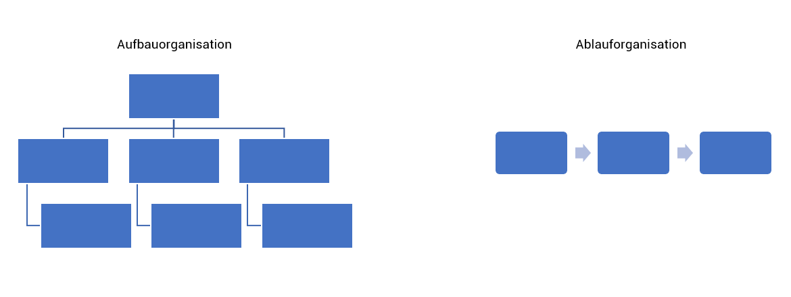
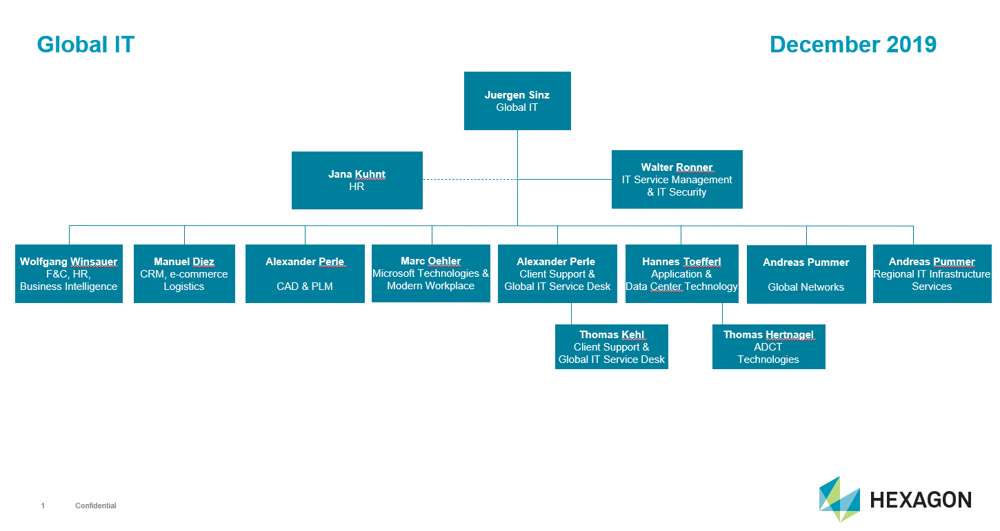
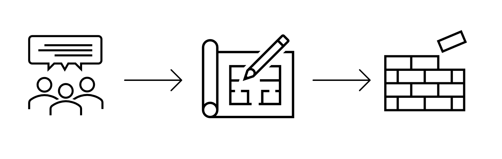

Unterschied zwischen Aufbau- und Ablauforganisation
Die Aufbauorganisation ist die Bildung von Abteilungen. Diese Abteilungen werden hierarchisch dargestellt und es werden Aufgaben und Kompetenzen zugewiesen.
Die Ablauforganisation koordiniert die verschiedenen Arbeitsschritte. Es sollten der zeitliche Arbeitsablauf, zum Beispiel Zeitpunkt oder Arbeitsfolge und der räumliche Arbeitsablauf, zum Beispiel schneller Durchlauf oder kurze Transportwege, berücksichtigt werden. Ausserdem wird die Arbeitszuordnung an einzelne Personen oder einer Gruppe definiert.

Beispiele von Aufbau- und Ablauforganisation
Ein Beispiel für die Aufbauorganisation wäre zum Beispiel ein Organigramm. Auf dem Bild ist das Organigramm der IT-Abteilungen von Hexagon zu sehen. Die Lernenden von Leica Geosystem werden Thomas Kehl (Client Support LJ 2+3), Marc Oehler (MS Technologies LJ 4) und Networks (Andreas Pummer LJ 4) zugewiesen.

Ein Beispiel für die Ablauforganisation ist, wenn mit dem Kunden ein Gespräch gestartet wird, um seine Wünsche umsetzen zu können. Er möchte eine Ziegelwand für ein kleines Häuschen. Sobald die Informationen aufgeschrieben wurden, können die Informationen zum Planungsteam, die dann einen Plan zeichnen, wie das Häuschen am Schluss aussehen sollte. Sobald der Plan fertig gezeichnet ist, kann dieser Plan an das Bauarbeiter Team weitergegeben werden, die dann mit dem Bau dieses Häuschen starten.

Was macht Unternehmen in Bezug zu Aufbau- oder Ablauforganisation erfolgreicher als andere?
Ich denke, wenn klar ist, welches der Ablauf vom Projekt ist, können die Mitarbeiter besser damit umgehen und wissen sofort, wer für was zuständig ist. Das Projekt kann schneller beendet werden, aber auch der allgemeine Arbeitsablauf ist effizienter.